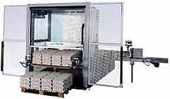
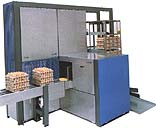

STAALKAT
|
| Яйцеупаковочная
машина Параметры |
Farmpaker 102S |
Farmpaker 192S |
Farmpaker 292S |
| Производительность, яиц/час | 14,400 (40 коробок) | 36,000 (100 коробок) | 72,000 (200 коробок) |
| Запас прокладок на разгрузчике | В зависимости от типа поддонов - максимум 75 | В зависимости от типа поддонов - максимум 75 | В зависимости от типа поддонов - максимум 75 |
| Буферное накопление загруженных рифленок стопкой | 6 стопок рифленок | 6 стопок рифленок | 6 стопок рифленок |
| Буферное накопление загруженных прокладок на наклонном конвейере | 6 рифленок | 6 рифленок | 6 рифленок |
| Функции контроля: - детектор отсутствия тары - контроль давления на пиковом накопителе - детектор затора наклонного конвейера или конвейера с уложенными в стопки загруженными рифленками - детектор автоматической остановки пикового накопителя и конвейера от курятника при выключении упаковщика - детектор сдвоенных рифленок - детектор положения прокладки на конвейере |
+ + + + - - |
+ + + + + + |
+ + + + + + |
| Электропитание | Однофазное, 230 В 50/60 Гц |
Трехфазное, 400 В, 50/60 Hz, 0.95 KВт |
Трехфазное, 400 В, 50/60 Hz, 2,05 KВт |
| Дополнительное оборудование: - расширенный накопитель яиц со своим собственным приводом (для боковой подачи яиц) - укладчик пустых рифленок в стопку - различные версии разгрузочных конвейеров - счетчик тары - маркировка яиц - загрузчик на паллеты - юнит пред-миражирования - поворачивающаяся панель управления |
+ + + + + - - - |
+ + + + + + - - |
+ + + + + + + + |
Farmpacker 125S - перший пакувальник з легко піковим накопичувачем,
що знімається
Продуктивність - 25.000 яєць/година, число рифленок у накопичувачі - 70, Система контролю як в FP 102S, элетроживлення трифазне, 380 У, 50 Гц, 300 - 500 Вт. В нього також є кілька варіантів оформлення. Докладніше про пакувальні машини FP 118S, FP 128S; Ви зможете довідатисяь написавши нам на ekstukraine@ukr.net
Продуктивність 80.000 яєць/годину

  |
Продуктивність 80.000
яєць/годину
Функції навантажувача на палети: :
|
Навантажувач у контейнери CL 2000
Продуктивність - 43.000 яєць на годину
Додаткова інформація - у Харкові
за тел. (057) 752-80-82, 757-23-93;
факс +38(057) 720-56-70; e-mail: ekstukraine@ukr.net
Телефони представництв в інших містах тут:
за тел. (057) 752-80-82, 757-23-93;
факс +38(057) 720-56-70; e-mail: ekstukraine@ukr.net
Телефони представництв в інших містах тут:
| |
|||
| © НПП "КИАТОН", 2004-2007г | |||